Transfer Between Your Personal Accounts
This guide provides a step-by-step process to transferring between your personal accounts
1
Click "Move Money"
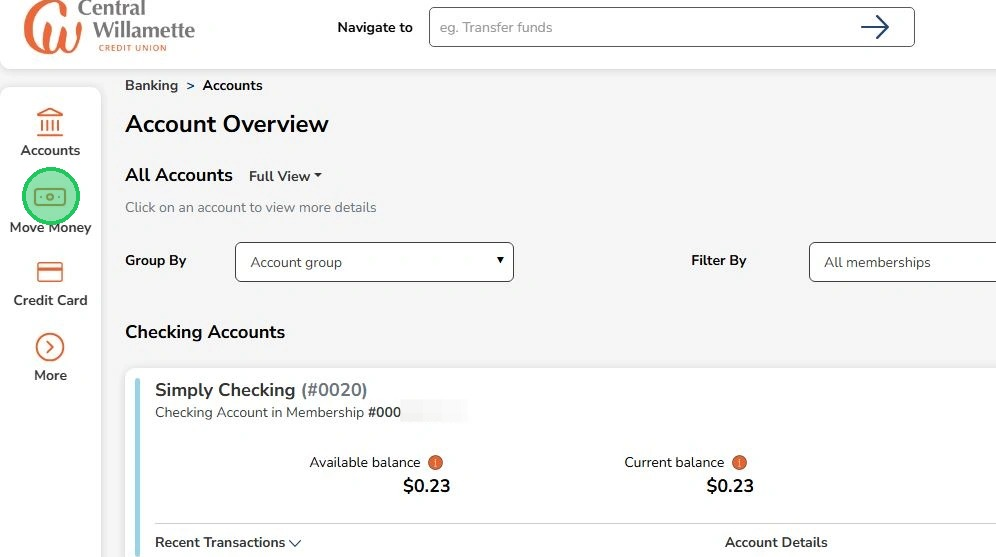
2
Click "Internal Transfers & Payments"
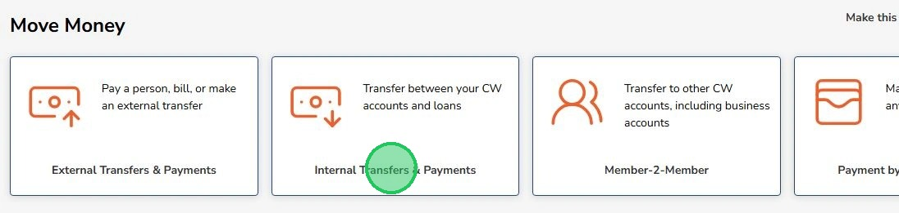
3
Select an account to transfer from (source account)
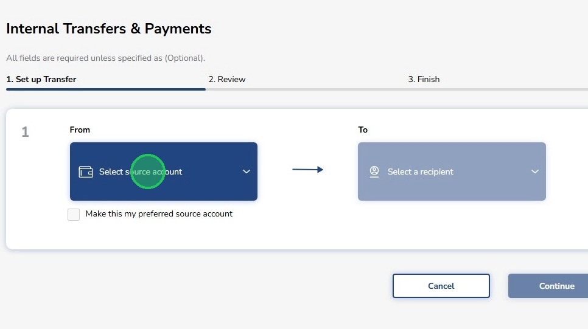
4
Select the source account
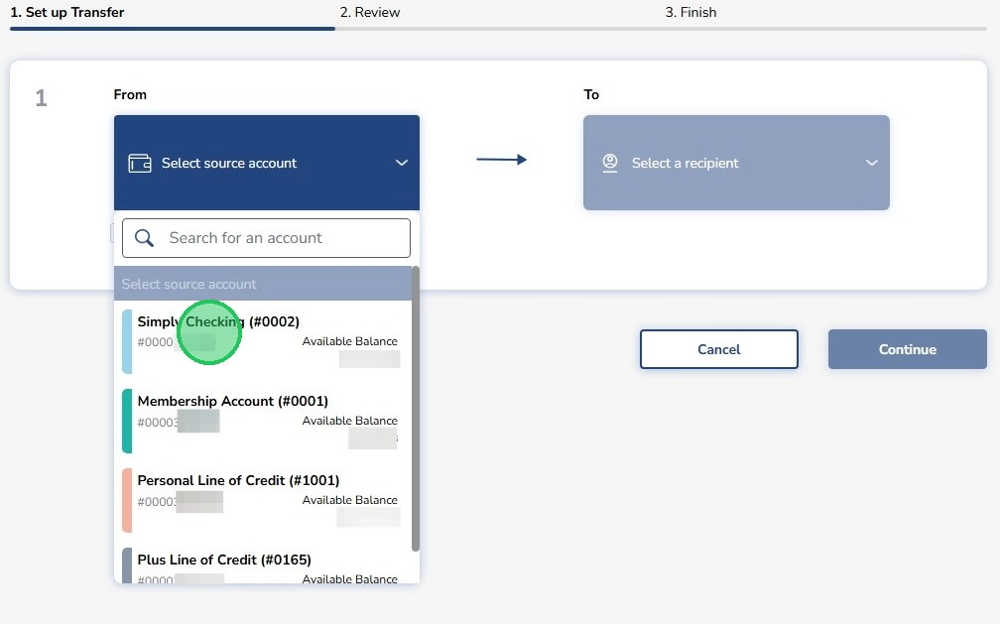
5
After selecting a source account, you can check the box directly underneath the account box to change your preferred source account.
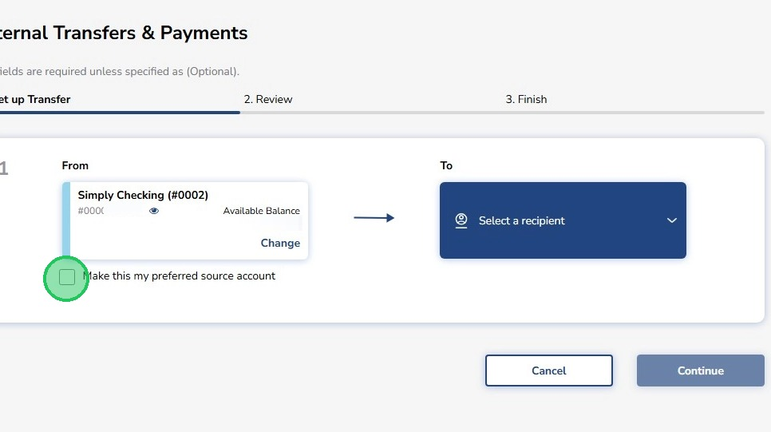
6
Click here to select an account the funds will go into
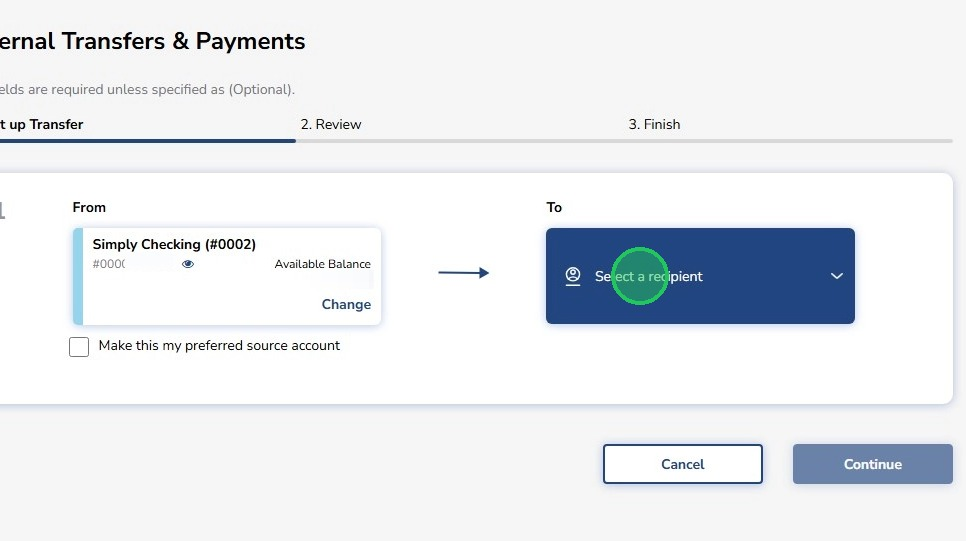
7
Choose an account
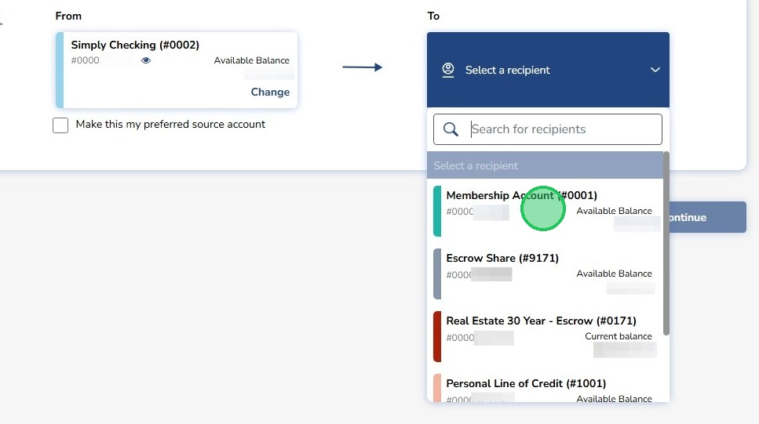
8
Enter the amount to transfer
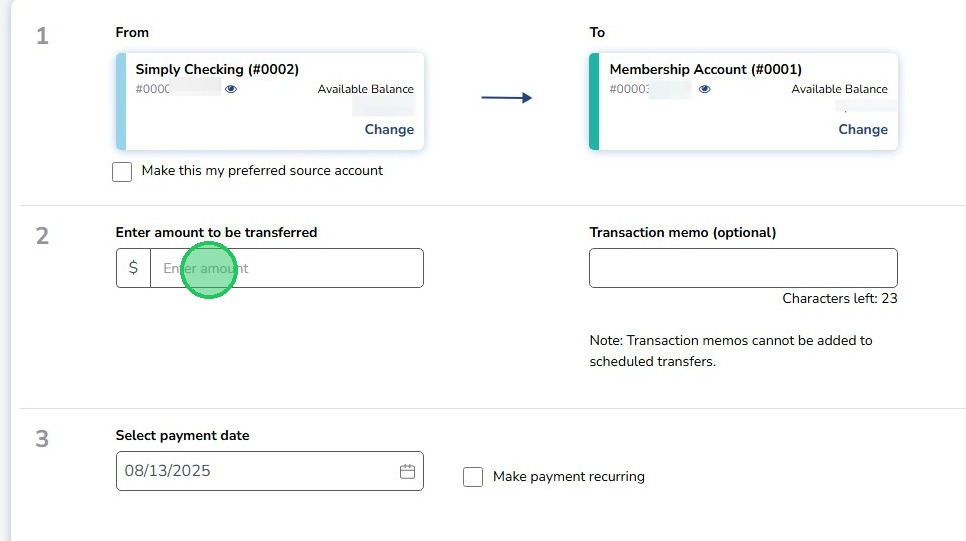
9
Click this text field to give your transfer a note (optional)
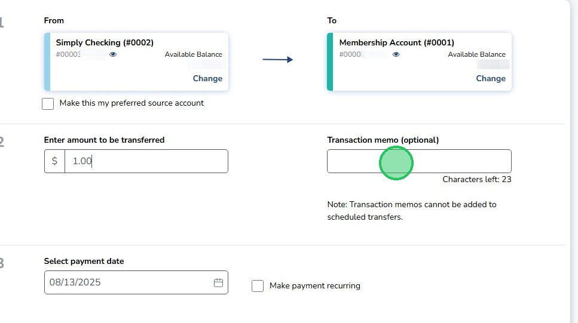
10
Select when the transfer should occur (today's date will be prefilled)
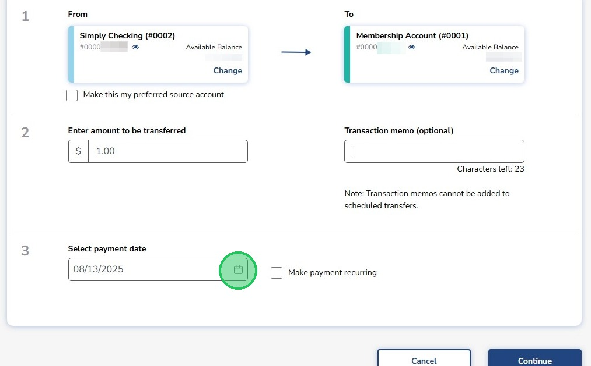
11
Check this box to make the transfer recurring
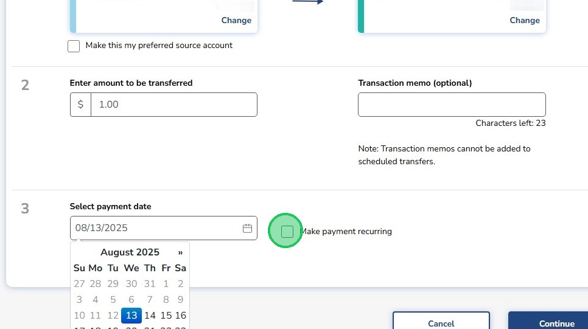
12
Select the frequency of the transfer
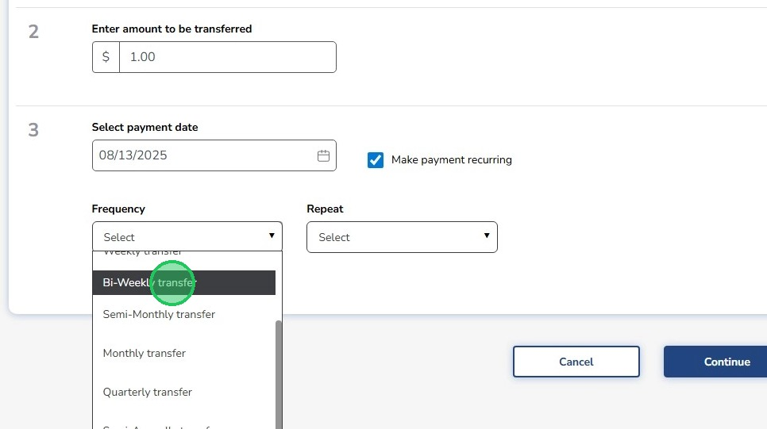
13
Select when you want the recurring transfer to end
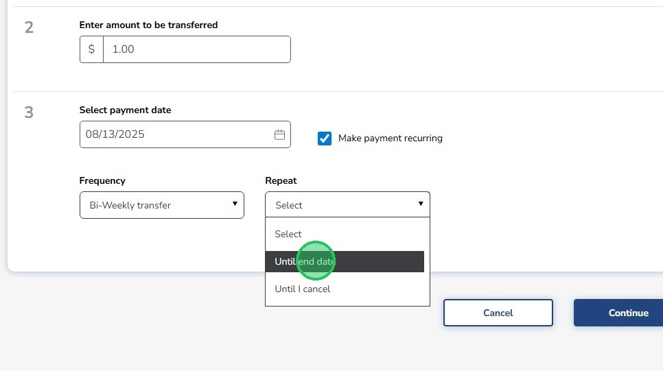
14
Click "Continue"
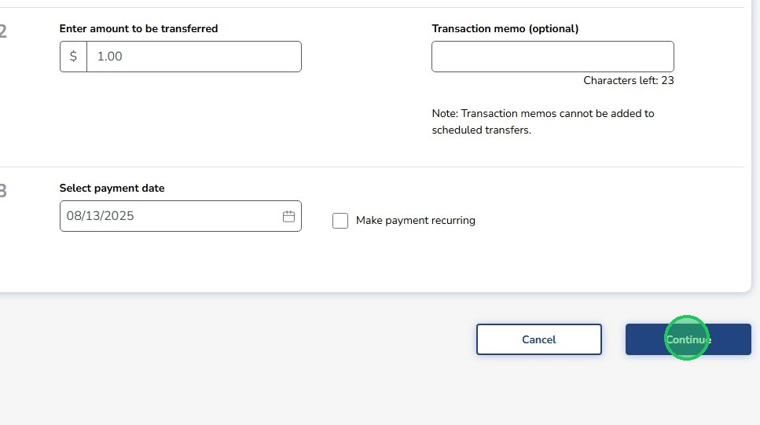
15
Review the transfer details then click "Confirm Transfer".
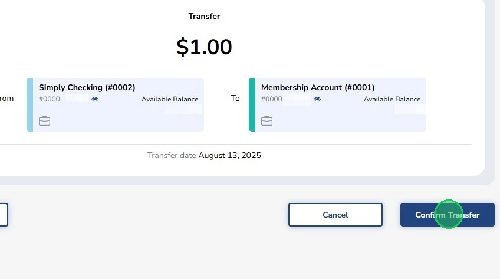
16
There is an option to print the transfer details on the 'Success' page
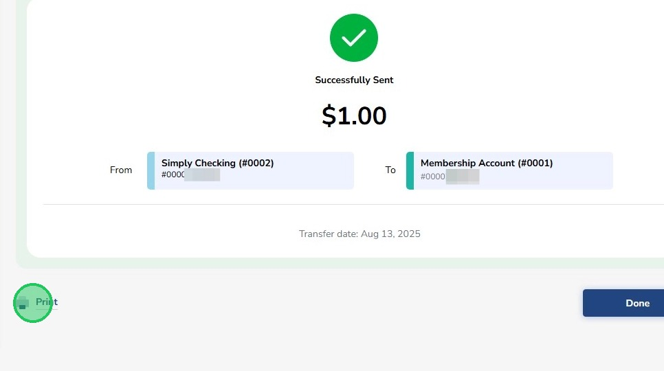
17
Click "Done"
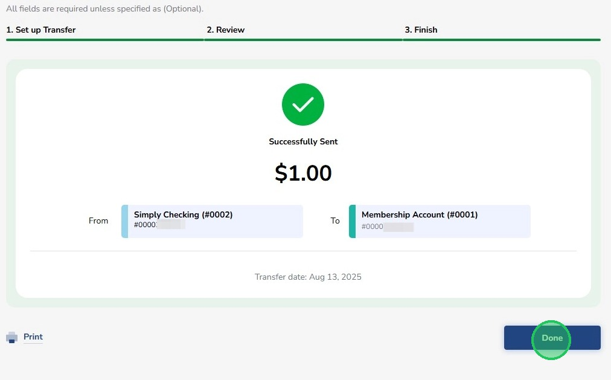